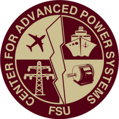

Technical Report on Resilient and Secure Large-Scale Energy Internet Systems
arXiv preprint arXiv:2608.12916, 2026
I am a researcher and engineer currently working at Orennia. I received a dual Bachelor of Science in Electrical and Computer Engineering, a Master of Science in Electrical Engineering, and a Ph.D. in Electrical Engineering from Florida State University in 2016, 2018, and 2019 respectively.
I have extensive experience in the modeling and optimization of electric power systems, renewable energy integration, cybersecurity, real-time simulation, and other smart-grid applications. I believe in a sustainable, secure, and energy-efficient society driven by innovation and automation; that is why I find rewarding to work in areas related to machine learning, data analysis, reinforcement learning, optimization, real-time simulation, and cybersecurity with applications related to the power and energy fields.
Los Alamos, NM
Mar 2021 - Jun 2023
Tallahassee, FL
Jan 2020 - Mar 2021Palo Alto, CA
May 2019 - Aug 2019Tallahassee, FL
May 2016 - Dec 2019Tallahassee, FL
Sept 2016 - Dec 2019Panama City, Panama
May 2015 - Aug 2015arXiv preprint arXiv:2608.12916, 2026
arXiv preprint arXiv:2607.16430, 2026
Technical Report LA-UR-26-28558, Los Alamos National Laboratory (OSTI), 2025
Electric Power Systems Research, vol. 241, 111398, 2025
IEEE Transactions on Smart Grid, vol. 16, no. 3, pp. 2554-2573, 2025
IEEE Transactions on Power Systems, 2023
Energies, Special Issue Cyber Security in Modern Power Systems, 2023
IEEE Open Access Journal of Power and Energy, vol. 9, pp. 226-240, 2022
IEEE Internet of Things Journal, 2022
2021 IEEE Electric Ship Technologies Symposium (ESTS), 1-9, August 2021
IEEE Journal of Emerging and Selected Topics in Industrial Electronics, Early Access, 2021
MSCPES '21: Proceedings of the 9th Workshop on Modeling and Simulation of Cyber-Physical Energy Systems, Article No.: 3, Pages 1-–7, May 2021
IEEE Access, vol. 9, pp. 29775-29818, 2021
IEEE Journal of Emerging and Selected Topics in Power Electronics, 2021
Patent. Florida State University Research Foundation Inc., 2019/2021. U.S. Patent 11,043,815
IEEE Access, vol. 9, pp. 2545-2563, 2021, 2020
IEEE Access, vol. 8, pp. 208378-208394, 2020
Proceedings of the 2020 Joint Workshop on CPS&IoT Security and Privacy, in conjunction with the ACM Conference on Computer and Communications Security (CCS), 2020
2020 IEEE 38th International Conference on Computer Design (ICCD), 2020
2020 IEEE CyberPELS (CyberPELS), 2020
The Journal of Engineering, (1), pp. 19-28, 2020
IEEE Transactions on Energy Conversion, vol. 35, no. 1, pp. 520-528, March 2020, 2019
IEEE Power and Energy Technology Systems Journal, vol. 6, no. 4, pp. 195-207, Dec. 2019
2019 IEEE Power & Energy Society General Meeting (PESGM), Atlanta, GA, USA, 2019, pp. 1-5
2019 IEEE Power & Energy Society General Meeting (PESGM), Atlanta, GA, USA, 2019, pp. 1-5
IET Renewable Power Generation, vol. 13, no. 7, pp. 1087-1095, 20 5 2019
Ph.D. Thesis, Florida State University, 2019, Tallahassee, Florida
2018 IEEE Power & Energy Society General Meeting (PESGM), Portland, OR, 2018, pp. 1-6
2018 IEEE/PES Transmission and Distribution Conference and Exposition (T&D), Denver, CO, 2018, pp. 1-9
Guest lecture Montana State University (MSU), EELE 455/555
Invited talk Department of Electrical and Computer Engineering, Auburn University
Invited panelist 2023 IEEE PES General Meeting, panel on State-of-the-Art Review on TSO-DSO Coordination Models and Solution Methodologies
Invited talk New Mexico State University (NMSU) & Microgrid Systems Laboratory seminar
Poster Department of Energy (DOE) Office of Electricity (OE) visit
Invited talk Research on Computing Systems (ROCS) Joint Group, King Abdullah University of Science and Technology (KAUST)
Talk NREL Fifth Workshop on Autonomous Energy Systems
Webinar IEEE Power Electronics Society (PELS) TC10 Design Methodologies web-seminar series
Demo Real-time co-simulation demonstration
Poster GEARED Poster Session, DistribuTECH 2019, New Orleans
Seminar FAMU-FSU/CAPS-Georgia Tech Joint Seminar
Poster 2018 IEEE/PES Transmission and Distribution Conference and Exposition (T&D)
Seminar FEEDER Seminar Series, Fall 2017
Seminar FAMU-FSU College of Engineering, ECE Seminar
Talk 2017 Collaborative Collision Environment, Florida State University
Poster GEARED Poster Session, DistribuTECH 2017, San Diego